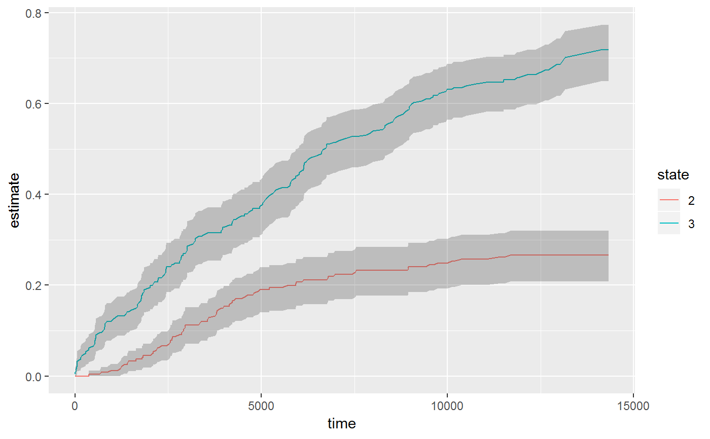

Construct tidied data frames showing survival curves over time.
# S3 method for survfit tidy(x, ...) # S3 method for survfit glance(x, ...)
| x | "survfit" object |
|---|---|
| ... | extra arguments, not used |
All tidying methods return a data.frame without rownames, whose structure depends on the method chosen.
tidy returns a row for each time point, with columns
timepoint
number of subjects at risk at time t0
number of events at time t
number of censored events
estimate of survival or cumulative incidence rate when multistate
standard error of estimate
upper end of confidence interval
lower end of confidence interval
state if multistate survfit object inputted
strata if stratified survfit object inputted
number of observations
n.max
n.start
number of events
Restricted mean (see survival::print.survfit()
Restricted mean standard error
median survival
lower end of confidence interval on median
upper end of confidence interval on median
glance does not work on multi-state survival curves,
since the values glance outputs would be calculated for each state.
tidy does work for multi-state survival objects, and includes a
state column to distinguish between them.
if (require("survival", quietly = TRUE)) { cfit <- coxph(Surv(time, status) ~ age + sex, lung) sfit <- survfit(cfit) head(tidy(sfit)) glance(sfit) library(ggplot2) ggplot(tidy(sfit), aes(time, estimate)) + geom_line() + geom_ribbon(aes(ymin=conf.low, ymax=conf.high), alpha=.25) # multi-state fitCI <- survfit(Surv(stop, status * as.numeric(event), type = "mstate") ~ 1, data = mgus1, subset = (start == 0)) td_multi <- tidy(fitCI) head(td_multi) tail(td_multi) ggplot(td_multi, aes(time, estimate, group = state)) + geom_line(aes(color = state)) + geom_ribbon(aes(ymin = conf.low, ymax = conf.high), alpha = .25) }